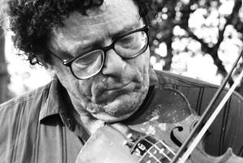
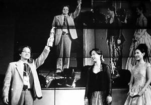
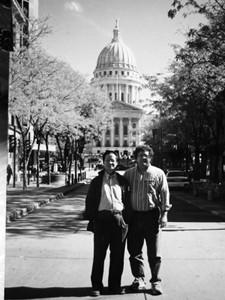
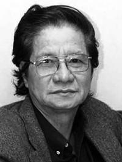
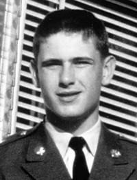

- Mike, anh hãy trả lời em thật rõ ràng, giữa em và Việt Nam, anh chọn ai?
☆
Tôi ngạc nhiên quá. Cô ấy nhắc lại câu hỏi.
☆
- Ôi lạy Chúa! Anh yêu Việt Nam và anh yêu em! Em đừng bắt anh phải chọn một, đừng dồn anh vào ngõ cụt!
☆
- Anh chọn đi! Em cần điều ấy anh ạ!
☆
Lặng đi hồi lâu, tôi nói:
☆
- Nếu em một mực bắt anh phải chọn một thì anh chọn Việt Nam.
☆
Cả hai chúng tôi đều khóc, và cô ấy quay lưng lại từ từ bước đi về phía cửa ra...
☆
☆
Sắp đến ngày kỷ niệm 30 năm tưởng nhớ những nạn nhân vụ thảm sát Mỹ Lai (3-1968 – 3-1998), Thủy nghĩ phải có một cuốn phim tài liệu về sự kiện này.
Nhưng tất cả mới chỉ có thế! Chưa có đề cương, chưa có kịch bản. Ngay cả trong đầu đạo diễn cũng là một số 0 tròn trĩnh!
Tuy nhiên Giám đốc xưởng phim Nguyễn Văn Nhân và Phó giám đốc Lê Mạnh Thích đã đồng ý và tạo mọi điều kiện để thực hiện bộ phim, họ tin rằng bọn hắn đã làm là được.
Qua báo Lao Động, hắn biết có một số người Mỹ trong đó có hai người trực tiếp dính líu đến vụ Mỹ Lai tên là Hugh Thomson và Larry Colbern sẽ sang Việt Nam và đến Mỹ Lai.
Đang nghĩ ngợi vẩn vơ thì Thăng, cậu con trai nói với bố:
- Hình như có mấy người Mỹ đang trọ ở Hàng Bạc...
Một cái tin ất ơ...Thế nhưng bí quá, hắn cứ mò đến phố Hàng Bạc.
Đây rồi, một nhà trọ...
- Bác ơi, nhà bác có người Mỹ ở trọ không?
- Có đấy.
- Xin bác gọi giúp một người xuống cho tôi gặp một chút.
- Ông gặp ai? Tên gì?
- Ai cũng được ạ!
Kỳ quặc hết chỗ nói!
Thế rồi một ông Tây to đùng đi xuống, trao đổi đôi câu. Giọng ồm ồm như vọng lên từ âm phủ, ông ta nói cũng sẽ đi Mỹ Lai. Chỉ thế thôi. Ông ta cho hắn số điện thoại của anh bạn Việt Nam tên là Phan Văn Đỗ (sau này, anh Đỗ đã góp nhiều công sức giúp thực hiện bộ phim).
Về nhà, hắn gọi điện mời anh Đỗ đến nhà ăn bữa tối cùng mấy anh em làm phim.
Mâm cỗ bày ra thịnh soạn. Chờ. Đến giờ rồi mà chẳng thấy người.
Chuông điện thoại. Chắc hỏng rồi!
- Anh Thủy ơi, tôi rủ thêm một người cùng đi được không?
- Anh ơi, mấy người cũng được, đến đây cho vui.
Lát sau, anh Đỗ xuất hiện giữa cái cổng đã mở rộng, bên cạnh là cái ông Tây to đùng đã gặp khi sáng. Thật là duyên kỳ ngộ.
- Xin chào, tôi là Mike Boehm.
Bia bọt rôm rả, bà chủ Hằng vui vẻ tận tình tiếp đãi những món ngon Hà Nội. Mấy khách lạ vui vẻ trò chuyện tự nhiên như bạn bè đã quen từ lâu.
Mike Boehm nhẩn nha kể, anh ta chẳng dính gì đến sự kiện Mỹ Lai cả. Khi xảy ra sự kiện đó anh ta đang ở Bình Dương, phục vụ trong một đơn vị quân đội chẳng liên quan gì đến súng đạn. Tuy nhiên từ khi cuộc thảm sát Mỹ Lai xảy ra làm chấn động thế giới, anh ta bỗng cảm thấy Việt Nam là một phần máu thịt của mình và điều đó đã thay đổi cả cuộc đời anh ta. Lúc nào đi đâu anh cũng đau đáu nghĩ về Việt Nam.
- Anh có gia đình chưa?
- Ồ tôi có một cô bạn, một người con gái tuyệt vời, tôi yêu cô ấy lắm. Tôi rất cám ơn cô ấy đã cho tôi một cuộc sống hạnh phúc và ngược lại tôi cũng đem lại hạnh phúc cho cô ấy.
Năm nào tôi cũng sang Việt Nam để đến Mỹ Lai vào dịp này và lần nào cô ấy cũng tiễn tôi đến tận sân bay.
Một lần trước khi lên máy bay, cô nói: “Mike, anh hãy trả lời em thật rõ ràng, giữa em và Việt Nam, anh chọn ai?”
Tôi ngạc nhiên quá. Cô ấy nhắc lại câu hỏi. Tôi bảo: “Ôi lạy Chúa! Anh yêu Việt Nam và anh yêu em! Em đừng bắt anh phải chọn một! Đừng dồn anh vào ngõ cụt!” Cô ấy vẫn tha thiết: “Anh chọn đi! Em cần điều ấy anh ạ!”
Lặng đi hồi lâu, tôi nói: “Nếu em một mực bắt anh phải chọn một thì anh chọn Việt Nam.”
Cả hai chúng tôi đều khóc, và cô ấy quay lưng lại từ từ bước đi về phía cửa ra.
☆
Nghe đến đó, mọi người lặng đi, không ai muốn ăn uống gì nữa...
Lát sau Thủy hỏi:
- Anh sống thế thì buồn quá, anh phải vui lên, phải có gì đó để vui để sống chứ, thể thao, âm nhạc? Chiến tranh đã qua lâu rồi...
- Có, tôi chơi violon.
- Ô, thế thì hay quá để tôi kiếm cho anh một cái!
- Tôi có rồi, đi đâu tôi cũng mang theo. Năm nào tôi cũng đến Mỹ Lai đứng chơi đàn trước những ngôi mộ cho những người đã khuất nghe. Tôi chỉ chơi hai bài, bài Khúc Nguyện cầu và bài Giã từ vũ khí...

Năm nào tôi cũng đến Mỹ Lai đứng chơi đàn trước những ngôi mộ cho những người đã khuất nghe
☆
Thủy đứng phắt dậy giơ hai tay lên trời và kêu lên:
- Có phim rồi!...
Thế là kéo nhau đi Mỹ Lai.
Tưởng suôn sẻ nhưng bỗng gặp một trở ngại như trái núi chắn ngang trước mặt: Hãng Truyền hình khổng lồ CBS của Mỹ đã ký hợp đồng với tỉnh độc quyền việc đưa tin những trường đoạn then chốt của lễ kỷ niệm! Và họ đã đưa cả một đoàn binh hùng tướng mạnh sang “tràn ngập” hiện trường!
Bó tay?
Quả thật, có đủ tài để làm ra một cuốn phim hay thì vẫn là... chưa đủ!
Anh còn phải biết cách làm sao chõ được ống kính vào đối tượng cần quay khi bị ngăn cản, có phim rồi lại phải biết cách đưa đến người xem khi bị cấm đoán.
Kỹ năng đó gọi là... độ quái! Không dễ học được ở nhà trường.
Thế rồi “Tiếng Vĩ Cầm Ở Mỹ Lai” đoạt giải Hạc Vàng Liên hoan phim Châu Á Thái Bình Dương lần thứ 43 tại Băng Cốc (1999)!
Sau đó bộ phim được tổ chức chiếu trong bầu không khí trang trọng tại Trung tâm Chiếu phim quốc gia. Phòng chiếu 500 chỗ, một nửa là người Việt, một nửa là khách mời người Mỹ và người nước ngoài. Ông đại sứ Mỹ phát biểu với những lời cảm kích.

“Tiếng Vĩ Cầm Ở Mỹ Lai” đoạt giải Hạc Vàng Liên hoan phim châu Á Thái Bình Dương lần thứ 43 tại Băng Cốc (1999)
☆
Xưởng phim tặng Mike bộ phim nhựa 35mm “ Tiếng Vĩ Cầm Ở Mỹ Lai ” . Một thùng tướng. Mike đem về đưa lên chiếc xe cà tàng của mình, tha đi chiếu cùng trời cuối đất nước Mỹ.
Một lần hắn đến thành phố Madison, tiểu bang Witsconsin thăm Mike, anh ta rủ lên xe cùng đi chơi. Trước khi lên đường anh ta vào phố rồi ôm lên xe những chai nước uống và bánh mì, thịt hộp... Toàn đến các quầy hàng che bằng lều bạt để xin các bạn quen, chứ trong túi chẳng có một xu!
Mike đưa hắn về quê, miền đất sát Canada lạnh giá, dẫn hắn đến tận chỗ hồi nhỏ anh ta đục băng trên mặt sông để câu cá. Anh ta kể, lúc đó mới hơn mười tuổi, loạng quạng thế nào thụt xuống hố băng, không hiểu làm sao lại leo lên được. Trường hợp như thế thường là chết vì bị dòng nước phía dưới băng đẩy đi xa, không tìm được cái lỗ thủng để mà lên nữa... cộng thêm cái lạnh buốt, mắt mở dưới nước không thể nhìn được cái gì cả, chân tay thì tê cứng lại.
Mike còn đưa hắn lang thang đến cái đập nước, nơi hồi nhỏ cậu ta đã từng ra đây ngủ qua đêm vì bị bố mắng.
Yêu Việt Nam đến lạ kỳ, Mike ở một mình trong căn phòng tồi tàn xập xệ chẳng có đồ đạc gì cho ra hồn, trên tường treo tấm giấy chứng nhận là “Hội viên Hội Phụ nữ Sơn Tịnh Quảng Ngãi”.
Nhưng Mike lại chẳng ưa gì chính nước Mỹ của mình. Thấy hắn chụp ảnh tòa nhà thị chính, ngôi nhà đẹp như nhà Quốc hội ở Washington DC, Mike bảo chụp làm gì, trong đó toàn bọn người xấu xa, chẳng ra gì; mua lá cờ Mỹ làm kỉ niệm, Mike cũng khó chịu: “ 50 ngôi sao không phải 50 tiểu bang mà là 50 tập đoàn lũng đoạn đang xâu xé nước Mỹ! ”

...trong đó toàn bọn người xấu xa, chẳng ra gì
☆
Mike cứ sống tạm bợ như vậy, ki cóp từng đồng để có tiền sang Việt Nam thăm Mỹ Lai và làm từ thiện...
Nhắc lại chuyện này, hắn xót xa cho Mike, muốn cậu ta quên đi quá khứ và sống cho bản thân.
Buồn chán thế đủ rồi...
☆
Bộ phim “Tiếng Vĩ Cầm Ở Mỹ Lai” đã làm xong, đã được giải thưởng lớn nhưng vẫn còn đôi điều thú vị “không có trong phim” như người ta thường nói...
Một đoàn làm phim lên đường mà không có quyết định của Cục Điện ảnh; phải chăng đó là lí do Cục không duyệt, cho là “tiền trảm hậu tấu”, phim làm xong rồi mời xem cũng không xem.
Ông Giám đốc xưởng phim Nguyễn Văn Nhân trực tiếp mời ông Nguyễn Khoa Điềm, Bộ trưởng Văn hóa. Mời ông xem đã, duyệt hay không duyệt là chuyện khác. Mới đầu ông Điềm tưởng chỉ là kịch bản, khi biết là cuốn phim đã quay hoàn chỉnh, ông xuống xem, chỉ đi một mình với lái xe vào một buổi chiều chủ nhật.
Xem xong phim mắt ông đỏ hoe. Ông nói:
- Nhân dân Quảng Ngãi cám ơn các anh, oan hồn những nạn nhân xấu số cám ơn các anh...
Ông yêu cầu Cục phải xem và cho in nhiều bản, công chiếu và gửi ra nước ngoài dự Liên hoan phim Thế giới.
Vậy mà một tuần sau lãnh đạo Cục mới xuống xem và sau này khi nghe Ban Tổ chức Liên hoan phim châu Á Thái Bình Dương lần thứ 43 tại Thái Lan công bố “Tiếng Vĩ Cầm Ở Mỹ Lai” đoạt giải vàng, ông Cục trưởng thì hết sức vui mừng; ông Cục phó thì ưu tư...
☆
Ngồi kể lại chuyện làm phim “Tiếng Vĩ Cầm Ở Mỹ Lai”, tôi lại có dịp nhớ lại những đồng nghiệp của mình.
Trước hết tôi muốn có đôi lời về anh Nguyễn Văn Nhân, anh Lê Mạnh Thích, các anh đã tin chúng tôi và hết lòng với bộ phim này. Vì thời gian gấp gáp, không kịp viết kịch bản, chưa có quyết định của Cục Điện ảnh, chưa có quyết định về nhân sự, chưa có tổng dự toán...các anh vẫn cấp máy phim, tiền bạc, giấy giới thiệu và cho chúng tôi lên đường vào Quảng Ngãi. Phải nói rằng hai anh là những người có lòng, vì công việc, vì anh em. Với những người như thế, chúng tôi quí mến tự đáy lòng. Đôi khi gặp khó khăn trắc trở trong công việc, có lúc tôi nản lòng, nhưng nghĩ đến cái tình với nhau, tôi lại cố gắng hơn. Vậy ra khi con người tin nhau thì cuộc sống xem ra lại vất vả hơn nhiều.
☆
Rồi các anh Hồ Trí Phổ, Vương Khánh Luông, Lê Huy Hòa, Đặng Trần Anh, Phan Minh Hương, anh chị em kĩ thuật, in tráng, kinh tế, hành chính... mọi người đều có những đóng góp đáng kể.
☆
...Trước khi nhận lời mời cộng tác với tôi, Hồ Trí Phổ làm việc ở xưởng phim Khoa học, cũng ở trong hãng phim chúng tôi.
Anh là người nghĩ được, viết được, làm được. Tôi thường nói anh là con dao pha, việc gì đến tay là làm và làm rất tốt. Khi cộng tác với nhau, anh chủ động quán xuyến mọi công việc của đoàn làm phim một cách chu đáo kể cả việc chuyên môn lẫn việc chăm lo đời sống sinh hoạt cho anh em. Một con người từng trải, giàu vốn sống, tháo vát và tiềm ẩn nhiều khả năng như anh, nếu được đào tạo bài bản thì chắc chắn sẽ có thêm những bộ phim hay. Nghĩ về Hồ Trí Phổ, tôi cứ nuối tiếc rằng hãng phim đã không đánh giá đúng, không sử dụng đúng khả năng và sở trường của anh. Trong khi đó anh đã đóng góp nhiều công sức với chúng tôi trong 3 bộ phim, “Chuyện Tử Tế”, “Chuyện Từ Góc Công Viên” và “Tiếng Vĩ Cầm Ở Mỹ Lai”.
☆
Khi tôi mời Vương Khánh Luông quay “Tiếng Vĩ Cầm Ở Mỹ Lai” là tôi tin tưởng ở sự cẩn mực của anh, tin tưởng ở tay nghề “quay chộp”, quay thời sự phóng sự nhiều năm của anh. Luông là tác giả của nhiều phóng sự, anh tháp tùng các nhân vật lớn đi thương thảo đại sự ở nước ngoài. Anh tiếp bước nhà quay phim phóng sự kỳ cựu Phan Trọng Quỳ, họ là những nhà quay phim thiện chiến, chuyên gia về những sự kiện chỉ xảy ra có một lần, thậm chí trong một khoảnh khắc – một loại hình phim mà không phải nhà quay phim nào cũng đảm nhận được.
Sau này Vương Khánh Luông đã làm nhiều phim tài liệu với tư cách là đạo diễn chính. Những phim tài liệu của anh rất thật, giàu tính kịch và có cấu trúc hấp dẫn.
Trong những người quay phim cộng tác với tôi còn có Nguyễn Như Vũ. Anh đã làm nhiều phim và có nhiều kỉ niệm, trước và sau khi chúng tôi cộng tác làm phim “Chuyện Từ Góc Công Viên”. Trong hãng phim, các vị lãnh đạo và đồng nghiệp đều quí Vũ. Bản tính hiền hòa ít nói, giống tính người cha – nhà quay phim Nguyễn Như Ái. Vũ là người thực sự đam mê với nghề, biết lắng nghe và cũng là người có chính kiến trong sáng tác. Tôi có một cảm giác hoàn toàn yên tâm về mọi phương diện khi được làm việc với Vũ.
☆
Khi làm phim “Chuyện Tử Tế”, không phải tình cờ mà tôi mời Lê Văn Long quay phim chính. Trong những anh em quay phim ở hãng Phim Tài liệu lúc đó, Long không phải là người nổi trội về tay nghề, về tiếng tăm. Khi bắt tay vào việc, tôi nghĩ “Chuyện Tử Tế” đôi khi cần sự liều lĩnh, phớt đời tuế tóa chứ không chỉ là sự cẩn mực, chỉn chu. Ở Long tôi thấy có tố chất đó: Không sĩ diện, không “cảnh vẻ”, thích nói thật, nói thẳng và chịu chơi. Sau này tôi càng thấm thía, nếu mời một quay phim khác quay “Chuyện Tử Tế” thì có lẽ không thể có trường đoạn kể ngày xưa, thời niên thiếu người quay phim này đã phải đi chăn vịt, rồi chui vào lều ngủ quên, bị ghi xấu vào lí lịch, rồi lại có ông thầy giáo giỏi bây giờ đi bán rau... Điều đáng yêu và cần ở Long là ở chỗ ấy.
☆
Cách đây 20 năm tôi mời nhà quay phim Đỗ Khánh Toàn làm quay phim chính của cuốn phim “Một Cõi Tâm Linh”. Như hầu hết các phim chúng tôi thực hiện, đều là phim nhựa 35mm và đây là bộ phim đi quay xuyên Việt và dừng lại Huế lâu nhất. Bởi thế cảnh quay rất đa dạng. Anh rất chịu khó, kĩ lưỡng trong từng cảnh quay và không bao giờ tỏ ra mệt mỏi. Được đào tạo quay phim ở Cộng hòa Dân chủ Đức, anh quen làm việc theo phong cách “Tây”, có lẽ vì vậy trước đó, năm 1989 tôi đã mời anh cùng thực hiện một bộ phim dài ở Tây Âu gồm Đức, Pháp, Ý, Anh, Bỉ. Đỗ Khánh Toàn có cách sống và phong cách làm việc dễ mến, đó là chân thành, vô tư và coi trọng tình nghĩa.
☆
Tôi có ấn tượng với nhà thu thanh kì cựu Lê Huy Hòa ở Hãng phim Tài liệu Trung ương. Từ lâu, trong việc làm nghề tôi có ý thức rất rõ về vai trò quan trọng của âm thanh, nhất là với phim tài liệu hiện đại. Tôi cũng đã nói điều này với các đồng nghiệp trẻ, các sinh viên trong và ngoài nước. Âm thanh thật sự có hiệu quả để làm cho bộ phim sống động, chân thực, lôi cuốn hơn rất nhiều. Nói không ngoa, nó chiếm tới 50% hồn vía và giá trị của bộ phim. Những thiết bị thu thanh hiện đại và một người thu thanh giỏi nghề là rất quan trọng với một ê-kíp làm phim chuyên nghiệp. Lê Huy Hòa là một người như thế. Và anh đã đóng góp phần công sức không nhỏ cho sự thành công của Hãng phim Tài liệu Trung ương, trong đó có những bộ phim tôi tham gia. Anh là người được đào tạo bài bản, yêu nghề. Chúng ta cũng nên biết rằng, xử lý âm thanh trên phim nhựa phức tạp hơn rất nhiều so với phim làm bằng băng video.
Qua những lần làm việc với anh, tôi nghĩ rằng khi được cộng tác với một đồng nghiệp có tầm thì người đạo diễn phải tự hỏi rằng, sự cộng tác của mình có tương xứng với họ hay không.
Và trong tình nghề nghiệp tôi muốn lưu ý các đạo diễn trẻ rằng, điện ảnh là tác phẩm của tập thể, là thành quả của trí tuệ và công lao của tập thể. Người đạo diễn tựa như một nhạc trưởng, cần biết kính trọng và thấu hiểu những con người trong dàn nhạc mới có thể khai thác tối đa tài năng và trí tuệ của họ.
☆
Tôi muốn có đôi lời tri ân với Nguyễn Sĩ Chung. Anh cùng học trường Điện ảnh Việt Nam với tôi từ 1965, cùng học ở Nga đầu những năm 70, cùng về Việt Nam và làm việc với nhau ở xưởng phim Tài liệu cho đến khi cùng về hưu. Nghề chính của Chung là biên kịch, sau này anh kiêm đạo diễn nhiều phim. Phim “Chốn Quê” anh làm năm 2001 đoạt giải vàng trong Liên hoan phim Châu Á Thái Bình Dương ở Gia-các-ta. Chung cùng tôi và các đồng nghiệp, quay phim Tô Thư, thu thanh Cao Huy làm phim ở Liên Xô năm 1986. Trong việc làm nghề và trong đời sống, Chung và tôi có rất nhiều kỉ niệm và chẳng có chuyện gì là không kể lể với nhau. Rồi năm 2009-2010-2011, Chung và tôi đã cùng Phùng Lê Anh Minh, Nguyễn Sĩ Khoa – con trai út của Chung làm phim nhiều tập “Vọng Khúc Ngàn Năm”. Trước đó tôi đã cùng với Nguyễn Sĩ Bằng, con trai lớn của Chung làm 4 tập phim về cụ Nguyễn Văn Vĩnh với cái tên “Người Man Di Hiện Đại” vào các năm 2006-2007.

Thời gian làm phim “Người Man Di Hiện Đại”
☆
Bạn tôi là một người khiêm nhường, biết nhiều nói ít, điềm đạm và chia sẻ với mọi người nên được bạn bè quí mến, nhất là... đám đàn bà con gái.
Tôi không thể nhắc đến tất cả, chỉ có điều tôi luôn tâm niệm rằng, có sự cộng tác của những người có tâm có tài như thế tôi mới có thể làm những bộ phim được khán giả trong và ngoài nước nồng nhiệt đón nhận như đã thấy...
Kết thúc việc quay phim “Tiếng Vĩ Cầm Ở Mỹ Lai” ở Quảng Ngãi, anh em trong đoàn làm phim thấy tạm bằng lòng với công việc đã làm, nhất là đã được Giải Vàng ở Liên hoan phim châu Á Thái Bình Dương. Nói là tạm bằng lòng vì bộ phim có thể hay hơn, đi xa hơn nếu được phép làm, được phép miêu tả như nó đã từng xảy ra.
Có ít nhất là ba trường đoạn quan trọng đành phải bỏ qua như sau:
Trường đoạn 1: Ba mươi năm sau (1998) nhân dịp lễ tưởng niệm, những người Mỹ trở lại tìm cậu bé có tên là Đỗ Ba được cứu thoát từ đống xác người năm xưa để xem cậu sống ra sao thì cậu đang bị... tù vì tội ăn cắp. Thật trớ trêu nếu không nói là đáng xấu hổ. Chi tiết này nếu được kể sẽ làm cho người vô cảm nhất cũng nhận ra rằng hai chữ “giải phóng” bị xúc phạm nặng nề như thế nào. Chúng tôi, anh em trong đoàn làm phim và cánh nhà báo nhà văn có mặt lúc đó rất muốn bằng cách nào đó xin cho Đỗ Ba ra ngoài gặp những ân nhân của cậu nhưng không được, đành bó tay. Cay đắng thế đó.
Trường đoạn 2: Phi công Glen Andriotta, người đã trông thấy một hình hài còn cựa quậy liền hạ trực thăng xuống, len lỏi qua đống xác người lôi ra Đỗ Ba máu me đầy người, mang lên trực thăng chở về bệnh viện Quảng Ngãi.

Phi công Glen Andriotta, người đã trông thấy một hình hài còn cựa quậy...
(ảnh của gia đình Glen gửi Trần Văn Thủy)
Sau đó vài tuần, trực thăng của Andriotta bị bắn rơi và anh bị giết y như những nạn nhân Mỹ Lai. Andriotta là con một trong một gia đình trung lưu. Chiến tranh là thế đó.
Cơ trưởng Hugh Thompson, người kiên quyết chĩa súng về phía đám lính Mỹ, sẵn sàng nhả đạn nếu họ tiếp tục tàn sát dân lành cũng qua đời sau lễ tưởng niệm ít năm.
Xạ thủ súng máy Lawrence Colburn sau chiến tranh trở về Mỹ đã có thời suy sụp, chán đời, đắm chìm trong ma túy nghiện ngập tưởng không gượng dậy được.
Người ta sẽ thấm thía và sẽ còn phải tiếp tục suy ngẫm về hai chữ “chiến tranh”.
Trường đoạn 3: Một trường đoạn quan trọng nữa phải bỏ qua là miêu tả về đời sống thân phận Mike Boehm, người kéo vĩ cầm trong phim, từ sau chiến tranh Việt Nam cho đến nay: Sống một mình, không gia đình, không nhận lương hưu, không thừa nhận bất kì cái gì mang giá trị Mỹ...
Anh ta không có lỗi gì, và cũng không hề can dự vào cuộc thảm sát năm 1968 ấy. Bởi vậy anh ta không phải làm cái việc cứu chuộc hay “sám hối” như một số người tưởng vậy. Chỉ đơn giản là Mike đã và đang làm cái việc cho thỏa lòng mình, để xoa dịu những nỗi đau chiến tranh đã đổ lên số phận con người trong quá khứ.
Từ sự khinh bỉ cuộc chiến ấy anh ta “vơ đũa cả nắm” khinh bỉ cả nước Mỹ, tẩy chay cả nước Mỹ - từ Tổng thống đến quốc hội, quốc kỳ. Những mẫu người dám đi đến sự tận cùng ý chí của mình như Mike thì thường thấy ở những nước như nước Mỹ.
Một bộ phim trung thực với những câu chuyện về thân phận con người giàu tính nhân văn như thế chắc chắn sẽ còn đi xa hơn, hay hơn... Chúng tôi rất biết điều đó nhưng cơ số phim nhựa, tiền bạc, thời gian không cho phép; nhất là sức ép của Cục Điện ảnh, của cơ chế “duyệt phim”. Họ không muốn chấp nhận bộ phim này. Nếu tôi “máu me” lên thì chắc chắn anh em trong đoàn làm phim cũng ủng hộ. Nhưng tôi e ngại sự phiền toái, sự liên lụy sẽ đến với ban lãnh đạo xưởng phim đã tin và hết lòng ủng hộ chúng tôi.
Đấy! Nhiều khi phim không thể làm hay hơn được là vì những lí do... ngoài phim như thế.
☆